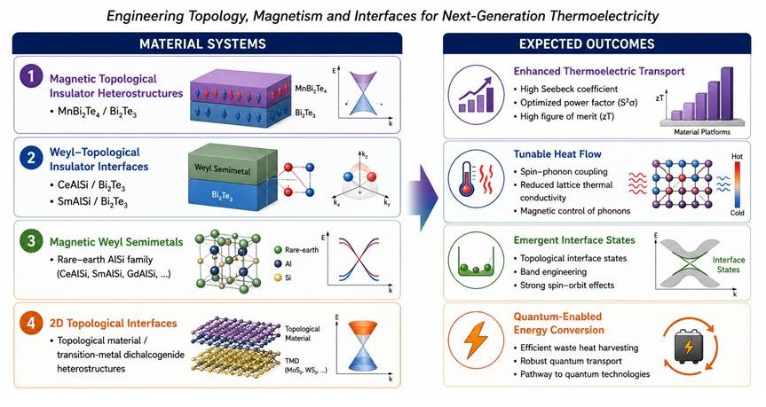
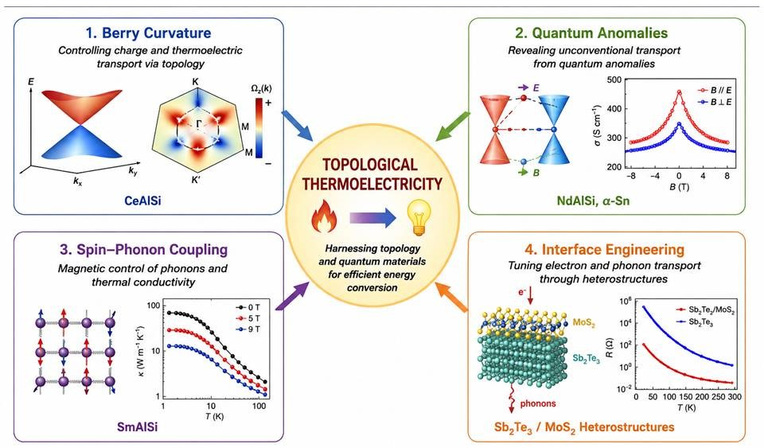
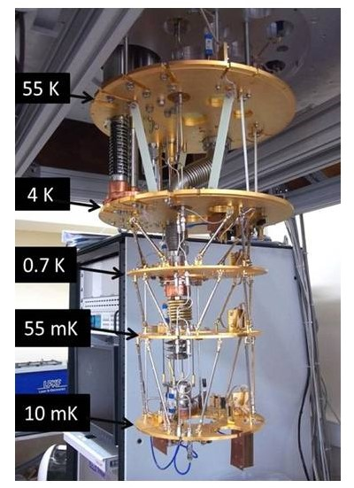

Research Overview
My research focuses on understanding charge, spin, and heat transport in quantum materials and low-dimensional systems. I combine advanced materials synthesis, nanofabrication, and cryogenic measurements to investigate fundamental quantum phenomena and develop next-generation quantum and energy-efficient technologies.
Superconducting Quantum Devices

Currently, my research involves fabrication and characterization of superconducting Josephson junctions and nanoscale superconducting devices. These systems are investigated at millikelvin temperatures using dilution refrigerator platforms.
Key topics include:
- Josephson junctions
- Quantum coherence
- Superconducting transport
- Cryogenic measurements
- Quantum device characterization
Topological Quantum Materials

I investigate topological transport phenomena in Weyl semimetals, Dirac semimetals, and related quantum materials.
Research topics include:
- Berry curvature physics
- Anomalous Hall effect
- Anomalous Nernst effect
- Magnetothermal transport
- Quantum oscillations
Thermoelectric Materials

My doctoral research focused on advanced thermoelectric materials, thin-film heterostructures, and energy harvesting technologies.
Research highlights include:
- ZT greater than 2 in multilayer structures
- Sb₂Te₃/MoS₂ heterostructures
- Low-dimensional thermoelectric transport
- Thermal conductivity engineering
- Thin-film device fabrication
Experimental Expertise
Thin-Film Growth
RF/DC sputtering, PLD, CVD, thermal evaporation, hydrothermal synthesis.
Nanofabrication
E-beam lithography, photolithography, cleanroom processing, rapid thermal annealing.
Characterization
AFM, KPFM, MFM, XRD, Raman, electrical and thermal transport.
Cryogenic Systems
Dilution refrigerators, PPMS, low-temperature transport, quantum measurements.